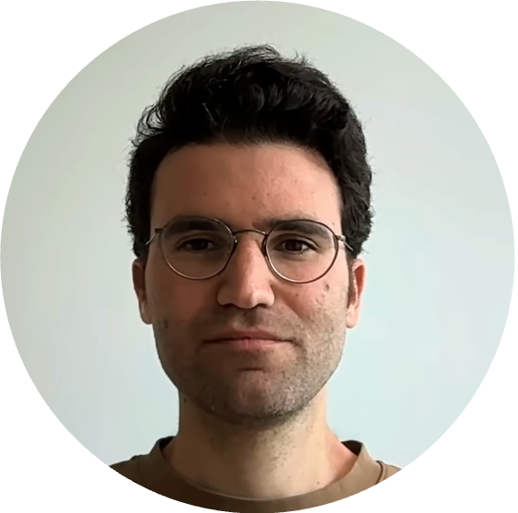

Kevin Perez is a Research Associate at the Institute of Oncology Research (IOR) and Università della Svizzera italiana (USI), where he leads an SNSF-funded program repurposing existing drugs for healthy aging. A computational biologist by training (PhD, Paris Cité University), he combines machine learning, multi-omics, and lab automation with validation in animal models to find interventions that extend healthy lifespan. His path to aging research runs through both academia and industry: software engineering roles at IBM and Lifen, research positions at the Broad Institute and MGH, the Buck Institute for Research on Aging, and the University of Lausanne, and co-founding the Swiss longevity biotech Epiterna. Before joining IOR/USI he was a Junior Group Leader at Charité – Universitätsmedizin Berlin. He has published over 20 papers, and his work on drug repurposing for longevity has been covered by The Telegraph and New Scientist.
Kevin's research asks how we can intervene in aging to extend the healthy years of life. One major focus is drug repurposing: mining large human biobanks such as the UK Biobank to identify approved drugs associated with lower mortality, then testing the most promising candidates in model organisms from C. elegans to mice. A second focus is cellular rejuvenation and epigenetic reprogramming, including chemical approaches that reverse hallmarks of aging and the development of "aging clocks" that measure biological age from epigenetic and chromatin-accessibility data. A third applies single-cell and single-nuclei profiling to map how tissues age and how senescent cells accumulate, from skeletal muscle to whole-organism studies spanning humans and companion animals. Throughout, his work integrates RNA-seq, single-cell and ATAC-seq, proteomics, metabolomics, survival analysis, and deep learning to turn large biological datasets into testable strategies against age-related disease.